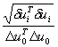

The displacement norm
is the Euclidian norm of the iterative displacement increment. To check convergence, the displacement norm is checked against the norm of displacement
increments in the first prediction of the increment:
| Displacement
norm ratio =
|
 |
See also: